KATIE COMMAND CENTER · UI FIELD STUDY · AUG 25, 2026
Watching all the screens
How ten AI-supervision inboxes actually look: 48 verified screenshots from Missive, Gorgias, Front, Chatwoot, Podium, Gladly, Intercom, Zendesk, Kustomer and Ada, organized by the pattern Katie needs, not by vendor. Tony's image from the 10x call: "Katie is just watching all the screens." This is what those screens look like in the wild.
This study has two parts. This page covers supervising the agent in conversation (escalation, review, takeover). Part 2: The scheduled and the conditional covers seeing every SMS that has not fired yet: the flow canvases, registries, queues and per-creator timelines, in 34 more shots. Part 3: The MVP cut turns the evidence into the smallest shippable console, as mockups. Companion deliverable: the Creator SMS Channel Audit.
The Aug 18 call fixed the requirements. Katie needs a home page that is a prioritized to-do across all buckets ("here's the drafts that were flagged... the orders... the content that needs to be reviewed... as opposed to a Slack alert"). Flags must arrive with a pre-written draft. Ownership must be obvious. She must be able to take a thread over, and give it back. And per Brian, the hard problem is the bird's eye view: "how do we give Katie a bird's eye view of the millions of decisions... almost like a little stock trading dashboard." Every screenshot below is evidence for one of those needs.
Method note. All images were downloaded Aug 25, 2026 from each vendor's own site, docs or help center, then verified by eye; captions describe only what is visible in the shot and link to the source page. real ui = a genuine product screenshot from docs or the live app. render = the vendor's own stylized marketing recreation of its UI (faithful, but staged). 79 shots were collected; the 48 strongest are shown.
1The queue that says what the AI needs
Podium · Zendesk · Missive · Gladly
Katie today: "I have to go review every single individual Slack channel... especially overnight or over the weekend... sometimes we miss them." The field's answer is a queue where the rows themselves announce the machine's state, and stuck conversations form their own bucket instead of hiding among handled ones.
Podium · Inbox
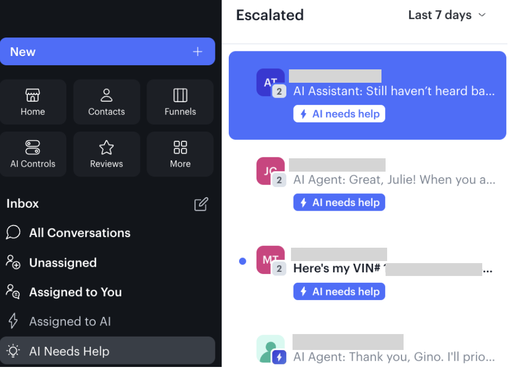
real uiThe inbox is split by ownership: All / Unassigned / Assigned to You / Assigned to AI / AI Needs Help. Every escalated row wears a blue "AI needs help" pill, and the filtered "Escalated" view is the triage queue. The pill auto-clears when the conversation closes, a human replies, or the AI is unassigned. source
Zendesk · Agent Home
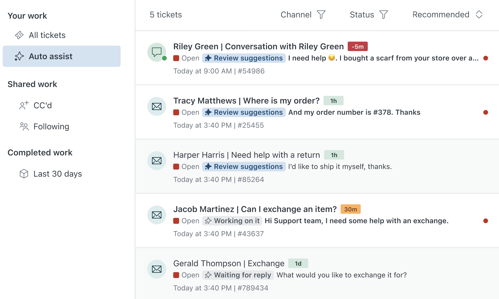
real uiEach row carries a machine-state chip ("Review suggestions", "Working on it", "Waiting for reply") plus a color-coded time badge (red -5m, amber 30m, green 1h). The row alone tells you what the AI needs from you and how urgently. source
Gladly · AI Sessions
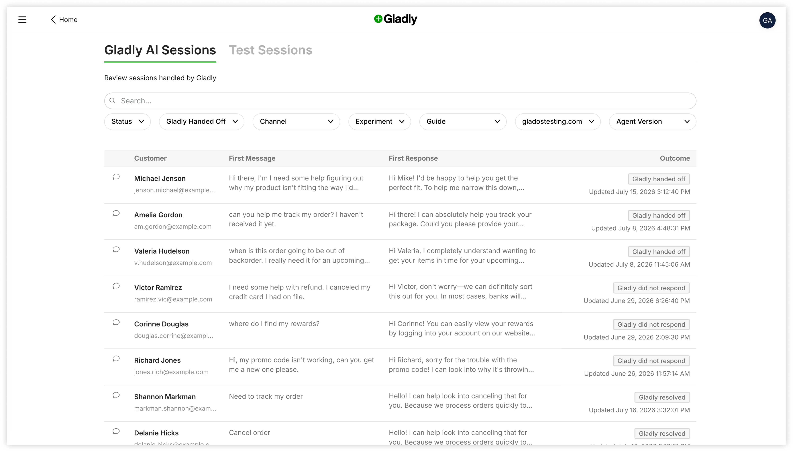
real uiEvery AI-handled conversation in one table with a three-state outcome badge: resolved / handed off / did not respond, filterable by channel and agent version. This is the "what did the AI do overnight" review, as one scannable table. source
Missive · Tasks
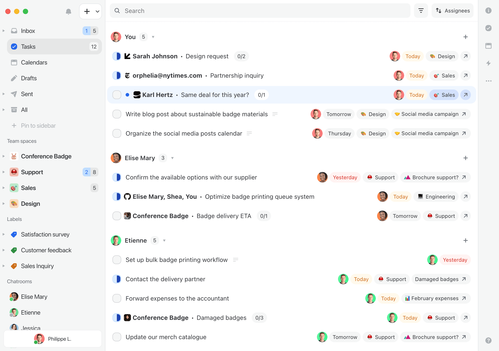
renderThe to-do view grouped per owner (You 5, Elise 3, Etienne 5), every row wearing a due pill (overdue red, Today amber) and a team chip. Workload balance and slippage readable in one scroll, which is exactly the delegation-to-Des shape. source
In the command center: the home queue is bucket tabs (Flagged texts · Orders · Content review · Overnight ledger) where each row carries the agent's state chip and a clock, plus an ownership filter cloned from Podium: Assigned to agent / Assigned to Katie / Assigned to Des / Agent needs help. The overnight ledger is Gladly's table with our three outcomes: sent / flagged / held.
2The draft review ritual
Zendesk · Intercom · Missive · Chatwoot
The Aug 18 decision: "if they send a flag of, I'm not sure I should be sending this SMS. Here's what I've drafted." The converged industry pattern is a draft in a clearly bounded panel with exactly two verbs, and keyboard-speed approval.
Zendesk · Auto assist
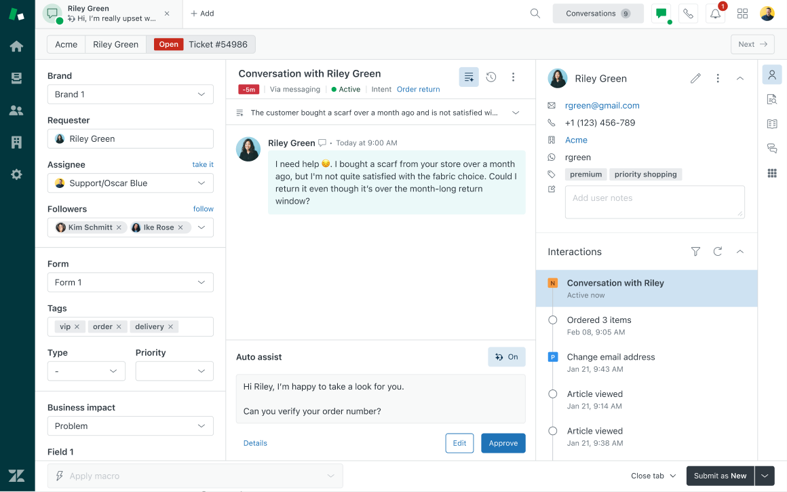
real uiThe AI draft sits in an "Auto assist" panel inside the real ticket, with exactly two buttons: Edit and Approve. Full context around it: intent label in the header, an SLA badge, tags, the customer panel. source
Zendesk · Auto assist
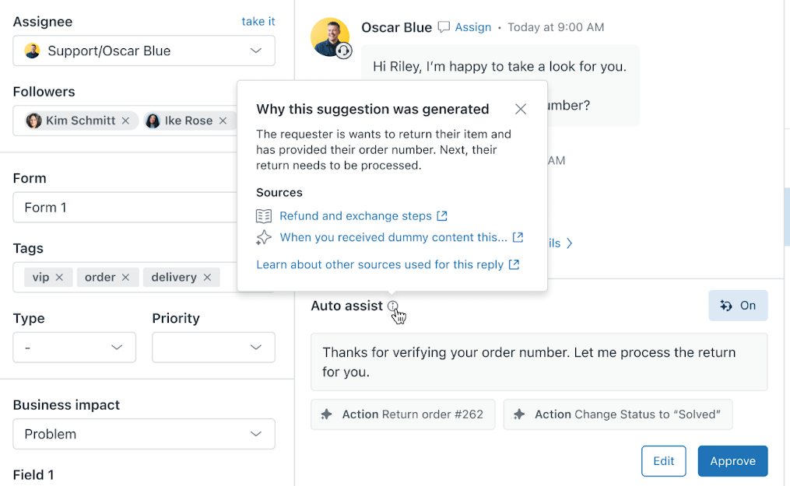
real uiThe draft carries a "why this suggestion" popover citing its sources, and its side effects ("Action: Return order #262", "Action: Change Status to Solved") are separate labeled chips. You approve the reply and its consequences knowingly. source
Intercom · Copilot
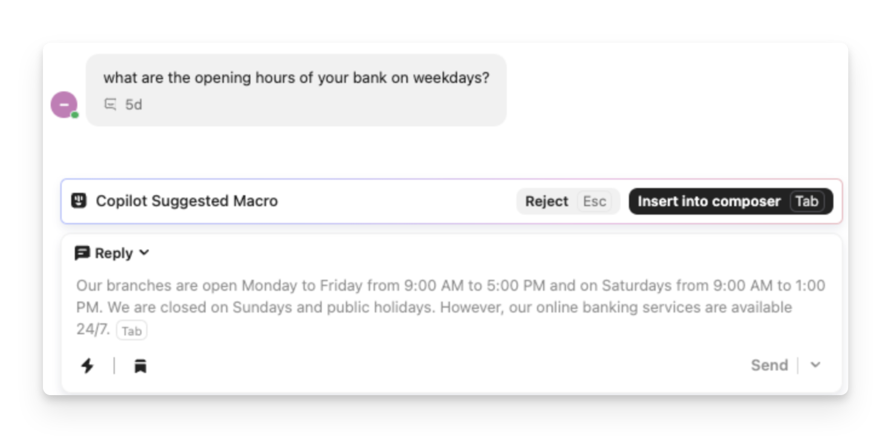
real uiThe suggestion bar between the question and the composer: Tab inserts, Esc rejects. One key per decision is what makes a 40-draft morning survivable. source
Missive · Drafts
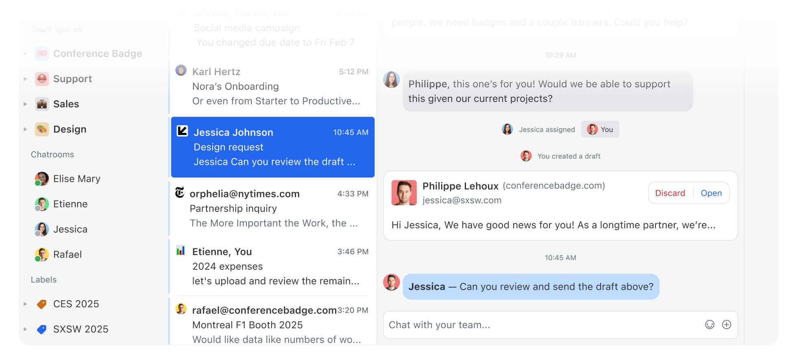
renderThe draft as a card pinned inside the thread ("You created a draft") with Discard / Open, plus an at-mention line: "Jessica, can you review and send the draft above?" Review-and-send as a one-click ritual, in place. source
Chatwoot · Copilot
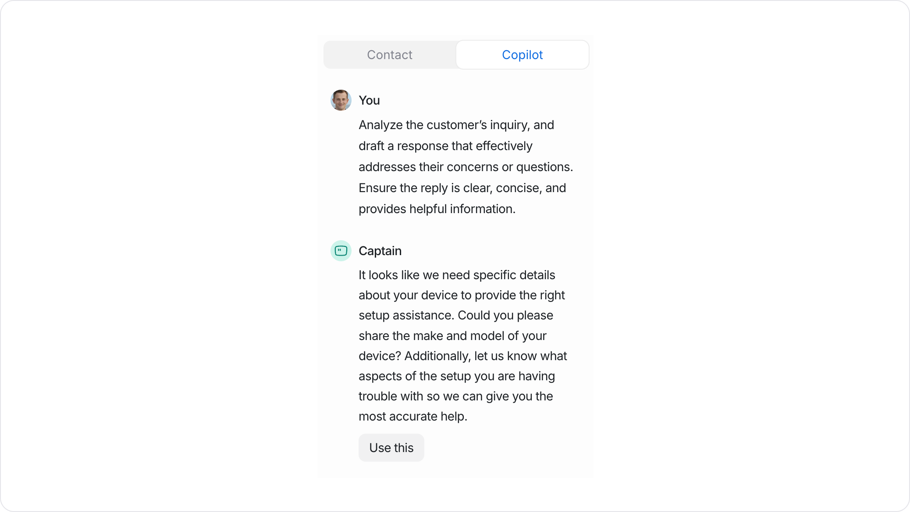
real uiCaptain stages its draft in a side pane behind an explicit "Use this" button; nothing reaches the customer until a human promotes it into the composer. source
In the command center: the flag card is the SMS bubble as it would send, two verbs (Approve · Edit), Tab/Esc keyboard flow, and any side effect (deadline moved, reminder suppressed, payment mentioned) as its own amber chip that Katie approves with the text, never hidden inside it.
3"Why I escalated," said in the thread
Gladly · Gorgias · Front
A flag without a reason makes Katie re-read the whole conversation. The best systems make the AI publish its escalation as a legible object: the reason, the suspect content, and a one-line summary. And crucially, giving up is a visible event, never silence.
Gladly · Handoff
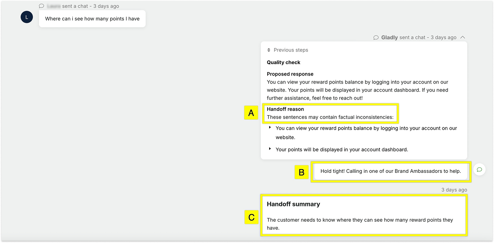
real uiThe escalation in three visible pieces: (A) Handoff reason naming the exact suspect sentences ("These sentences may contain factual inconsistencies"), (B) the holding message the customer saw, (C) a one-line Handoff summary. Judgeable in five seconds. source
Gorgias · Handover
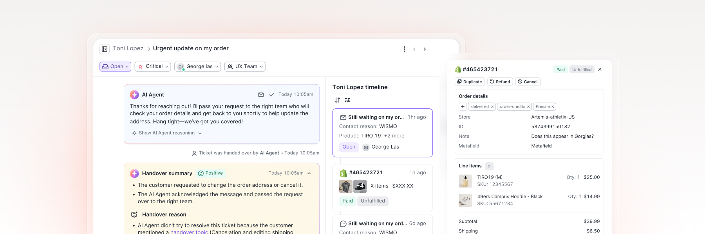
renderAn inline handover card with the summary, a sentiment badge, and the explicit reason rule that fired ("the customer mentioned a handover topic"), plus a "Show AI Agent reasoning" expander on the message above. source
Gladly · Review trace
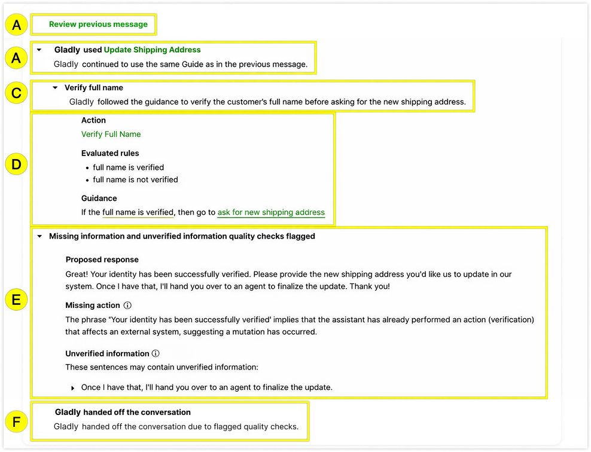
real uiThe full decision chain per message: which Guide was used, which rules were evaluated ("full name is verified" / "is not verified"), which quality checks fired, ending in "Gladly handed off the conversation due to flagged quality checks." Auditing a decision, not re-reading a thread. source
Front · Autopilot
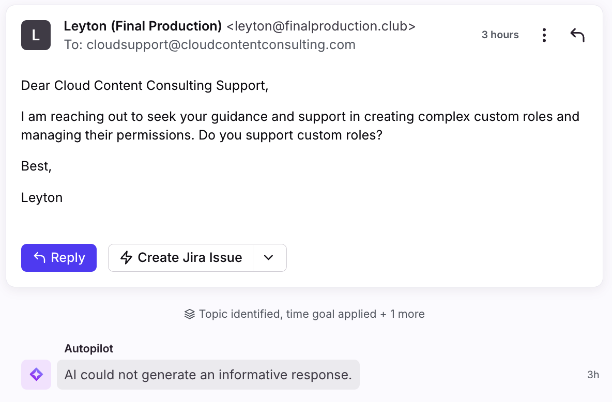
real uiThe give-up state as a first-class event in the thread: "AI could not generate an informative response." The AI declining is information, stamped where the next human will look. source
In the command center: every flag card leads with a reason line written by the checker agent ("creator sounds frustrated", "mentions a product problem", "can't verify the deadline I want to reference"), the specific suspect sentence highlighted inside the draft, and a one-line summary. This is the UI face of the checker agent from the kickoff brief.
4Whose thread is it right now
Front · Zendesk · Chatwoot · Kustomer · Podium
Katie's fear is double-texting a creator the agent is mid-conversation with, or assuming the agent has something she actually owns. Every serious system makes ownership an explicit, visible state with a one-click takeover.
Front · Autopilot
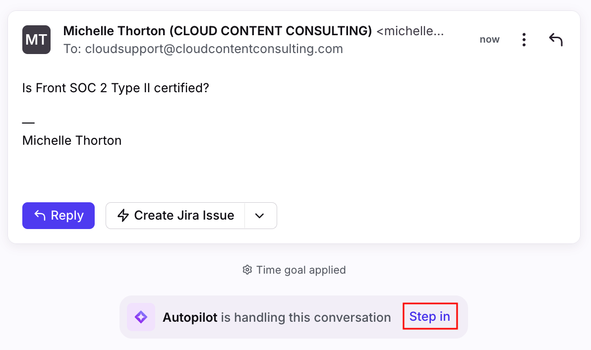
real uiA persistent lavender banner: "Autopilot is handling this conversation" with a one-click Step in. Clicking it warns that Autopilot will stop replying, then moves the pending draft into the composer. Ownership explicit and reversible. source
Zendesk · AI ticket
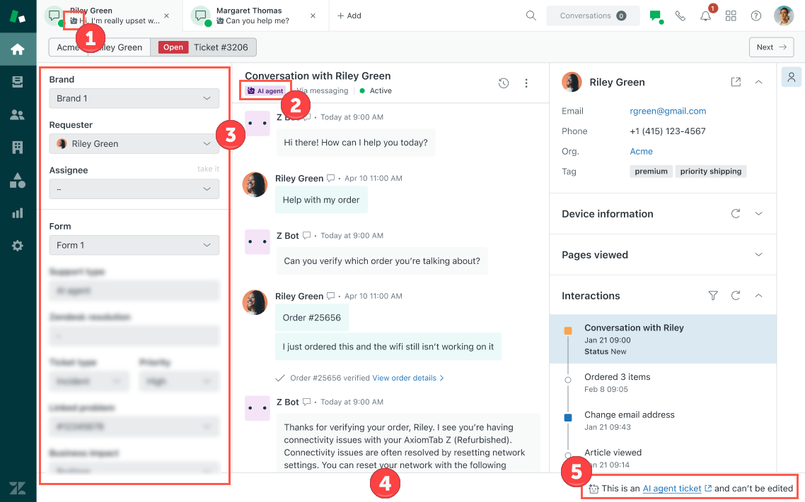
real uiAn AI-owned ticket is visibly different: bot icon on the tab, purple "AI agent" badge, greyed-out read-only fields, and a banner: "This is an AI agent ticket and can't be edited." Escalation flips it to a normal editable ticket. source
Chatwoot · Thread
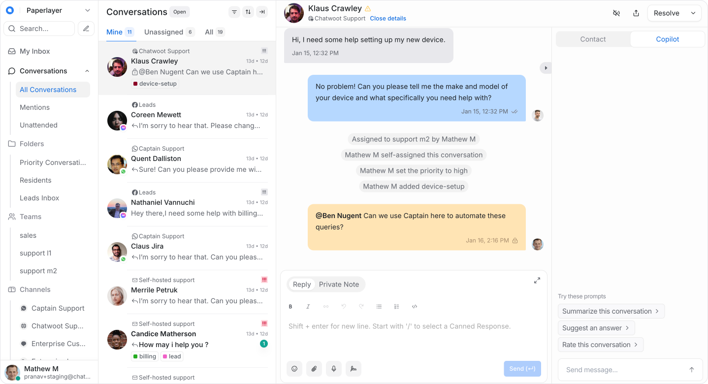
real uiEvery assignment, takeover and priority change is an inline grey system chip in the thread itself ("Mathew M self-assigned this conversation", "set the priority to high"), with a yellow private note beside the messages. Ownership history reads in sequence with the conversation. source
Kustomer · Thread
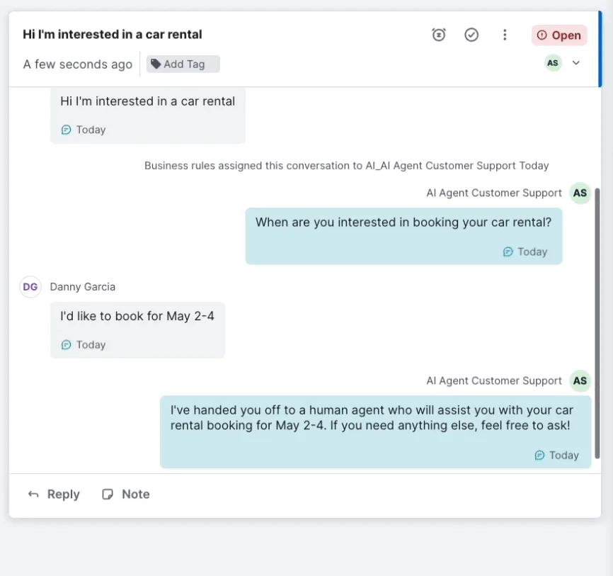
real ui"Business rules assigned this conversation to AI Agent", then the AI's own message: "I've handed you off to a human agent." Both directions of the handoff printed as system lines. source
Podium · Settings
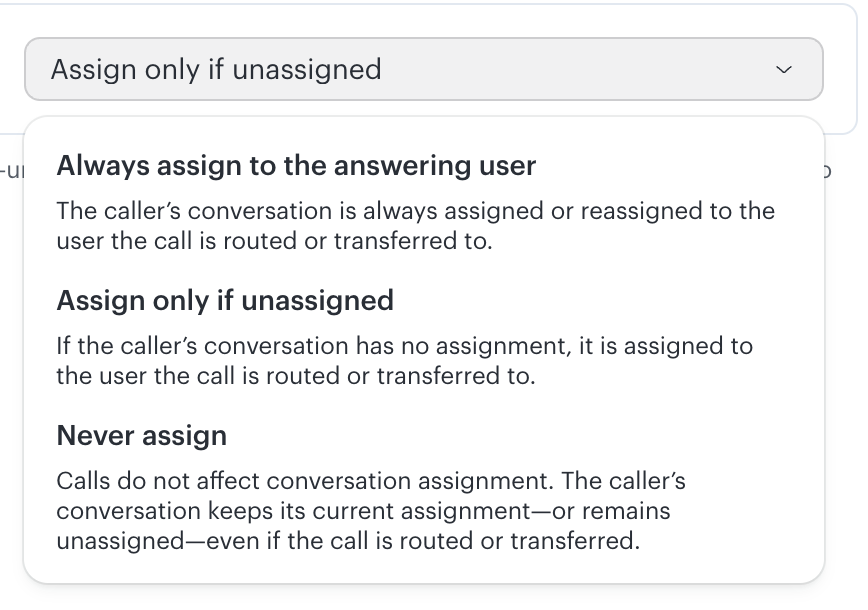
real uiTakeover policy as a three-option picker with one-sentence consequences: always take over / only if unowned / never. The ownership rule is a readable choice, not an implicit behavior. source
In the command center: each thread header states its owner (Agent · Katie · Des · Suppressed) with Front's step-in banner when the agent holds it, Zendesk's visual read-only treatment while it does, and Chatwoot's inline system chips as the permanent record. Stepping in pauses the agent's queued sends for that creator automatically.
5Take over without re-reading
Ada · Front · Gladly · Kustomer
The cost of an escalation is the read-in. The field's best trick is making the AI write the read-in for you: a living summary, the step trail of what already happened, and on close, a record of who did what.
Front · Summary
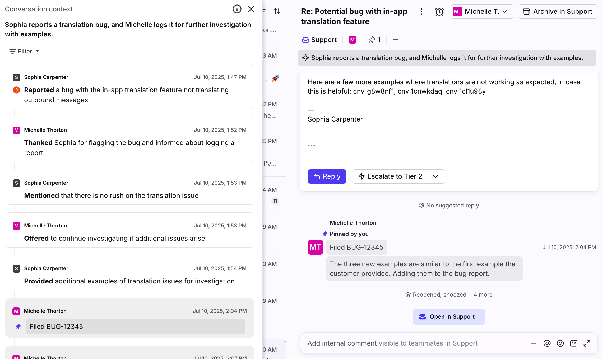
real uiA one-line AI summary pinned in the thread header, expanding into a verb-first event timeline (Reported, Thanked, Mentioned, Offered, Provided) in the "Conversation context" panel. It re-writes itself with every new message. Mid-flight takeover without archaeology. source
Ada · Handoff
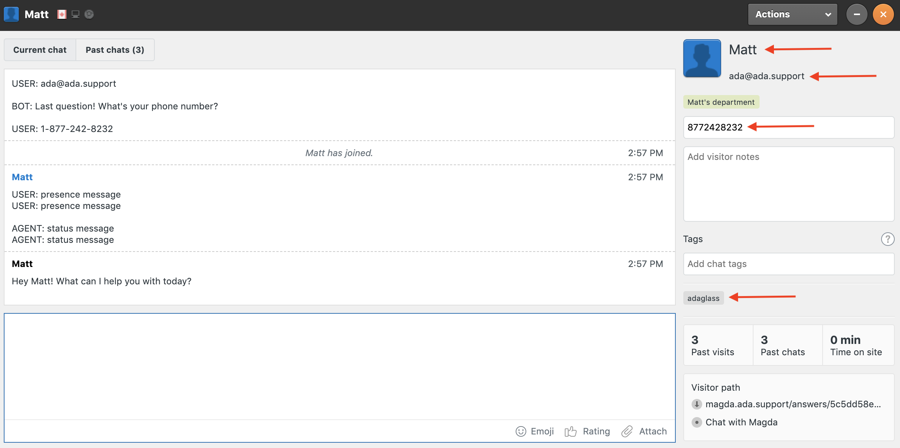
real uiOn handoff the whole bot transcript is relayed into the human's window with speaker prefixes (USER: / BOT:), and the context rail arrives pre-filled by the bot: name, email, phone, department chip, tags, past visits. The human never re-asks for anything the AI already collected. source
Gladly · Step trail
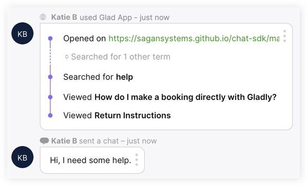
real uiA dotted step trail of what the person already tried before reaching a human: what they searched, which help answers they viewed. Katie never suggests the thing the creator already read. source
Kustomer · Closing
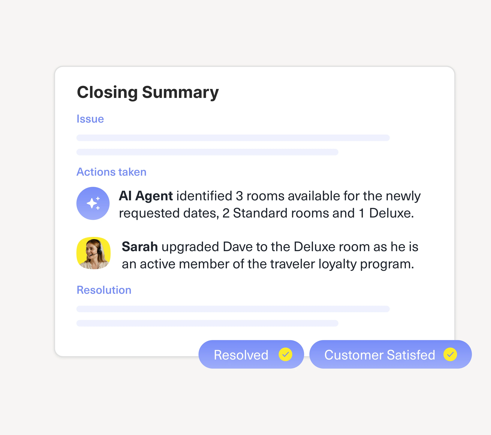
renderThe auto-written closing summary attributes each action to its actor: sparkle avatar for the AI's step, human avatar for Sarah's. Every conversation ends with an ownership audit trail. source
In the command center: flag cards open with the agent-written read-in: one line of summary, the last thing the creator was told, and what the agent already checked. On close, the same mechanism writes the creator note automatically, which is exactly the note-agent behavior Nisarg described.
6The context rail
Missive · Gorgias · Front · Intercom
Approving a draft to a creator requires her campaign state next to the thread: stage, deadline, shipment, payment. Helpdesks solve this with a context sidebar; none of them can show campaign context, which is precisely Benable's advantage in building its own.
Missive · Sidebar
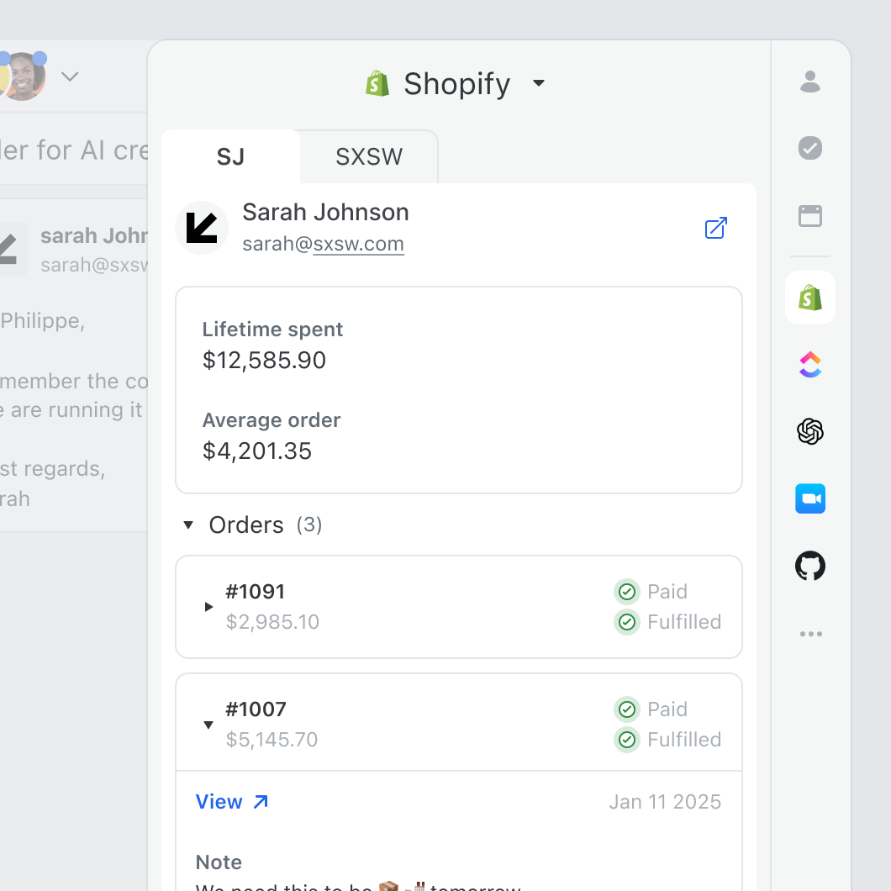
renderThe commerce panel docked beside the thread: lifetime spend, average order, and an orders list with green Paid / Fulfilled badges. Replace "orders" with "collabs" and this is the rail Katie needs. source
Gorgias · Sidebar
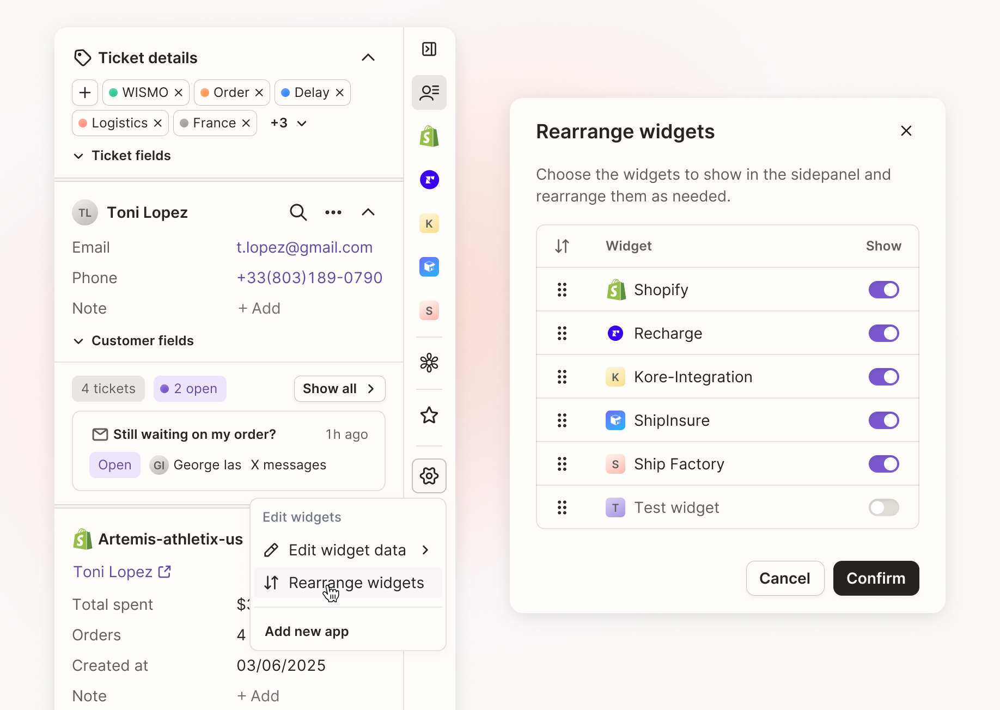
real uiThe sidebar is widget-based and re-orderable: drag handles and show/hide toggles per data block (Shopify, shipping insurance, subscriptions). The ops lead pins the blocks that matter per account, which is the Katie-owns-her-tool principle applied to a sidebar. source
Front · Copilot
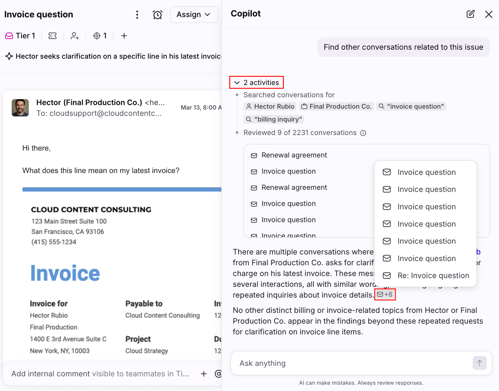
real uiAn askable sidebar that shows its work: "Find other conversations related to this issue" produces an expandable trace (searched chips, "Reviewed 9 of 2,231 conversations") before the answer. Trustworthy cross-history lookups like "has this creator ghosted before?" need exactly this. source
Intercom · Copilot
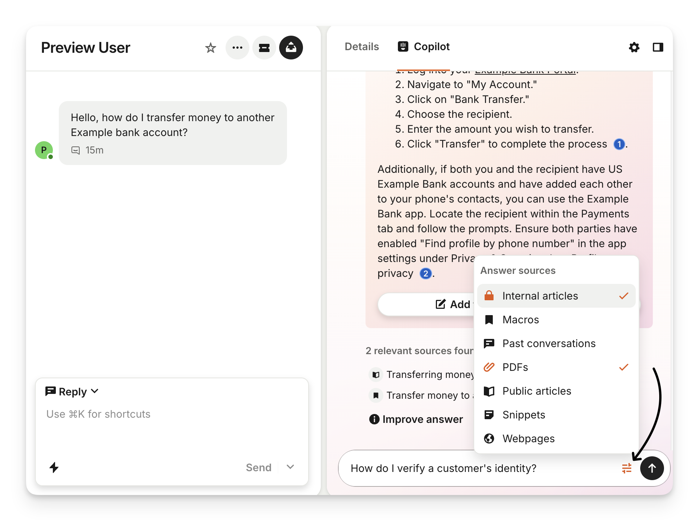
real uiEvery claim in the answer carries a numbered citation chip, and a source filter restricts answers to vetted internal material. Receipts, not vibes. source
In the command center: a per-creator rail with stage, fork, deadline clock, shipment state, payment state, consent state, and the auto-notes ("prefers DMs", "away until Wednesday"), built as re-orderable blocks so Katie tunes it herself. Plus one ask-box wired to the same CreatorContext payload the agent uses, answering with citations into admin.
7Rules Katie can read (and test)
Gladly · Chatwoot · Intercom · Missive · Zendesk
The kickoff brief proposes escalation policy as plain-language playbooks. The field agrees, and adds two things: rules should wear their own usage stats, and there should be a way to test a rule against a message before it goes live.
Gladly · Handoff rules
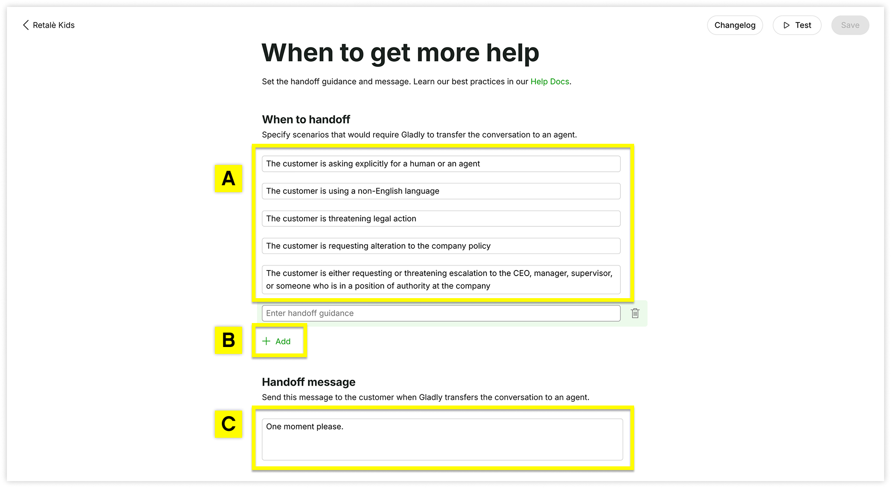
real uiEscalation triggers as an editable list of plain-English sentences ("The customer is asking explicitly for a human", "The customer is threatening legal action"), each with guidance, a trash icon, an Add button, and a Test button in the header. source
Chatwoot · Captain
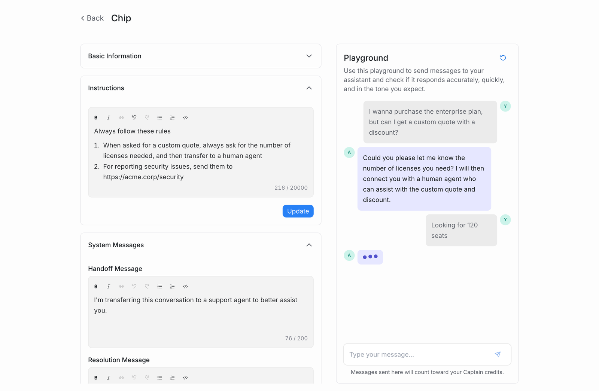
real uiThe instructions editor lives next to a live Playground pane: type a tricky message, watch whether the AI escalates or answers, before the rule ships. Policy editing with instant rehearsal. source
Intercom · Guidance
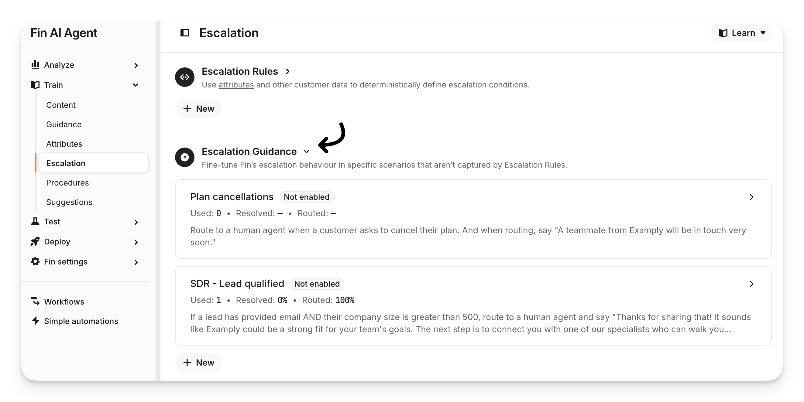
real uiTwo layers on one screen: deterministic Escalation Rules on data, and plain-language Escalation Guidance cards, each wearing its own Used / Resolved / Routed counters. You can see which rules actually fire before trusting them. source
Missive · Rules
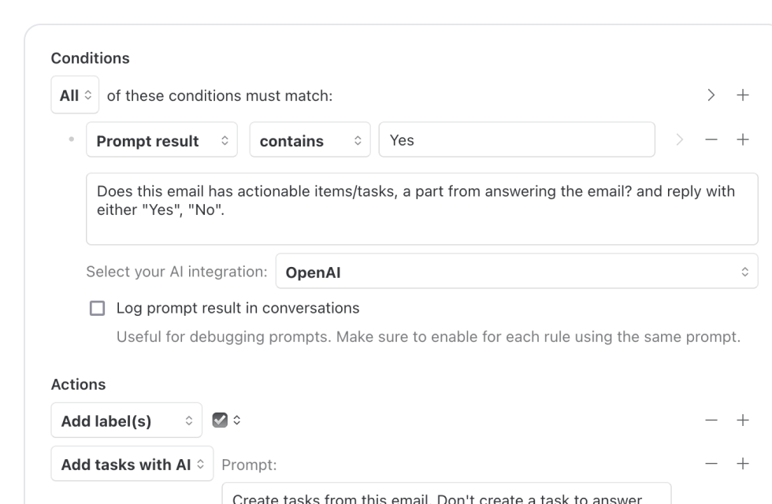
renderA plain-language AI prompt as a rule condition ("Does this email have actionable items... reply Yes or No") with a "Log prompt result in conversations" audit toggle. Why-did-it-fire is inspectable in the thread. source
Zendesk · Setup
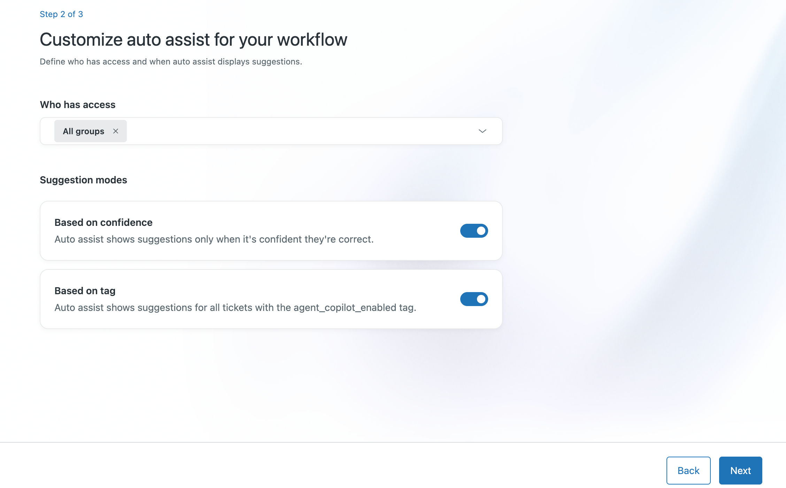
real uiAutonomy as two plain toggle cards: suggestions "based on confidence" vs "based on tag". The dial reads like a sentence, not a rules engine. source
In the command center: the playbook library is a card per scenario (away creator, product problem, angry creator, deadline ask), each card showing how often it fired this month and where it routed, with a test box at the top ("paste a creator text, see what the agent would do"). Katie edits cards, Brian's system compiles them.
8Where escalations land, and who gets pinged
Podium · Intercom
An escalation is only as good as its routing. The SMS-native answer (Podium) is to route per reason to named people, previewing exactly what the ping will look like. Intercom adds the missing middle mode between autonomy and handover: ask a human first.
Podium · Escalations
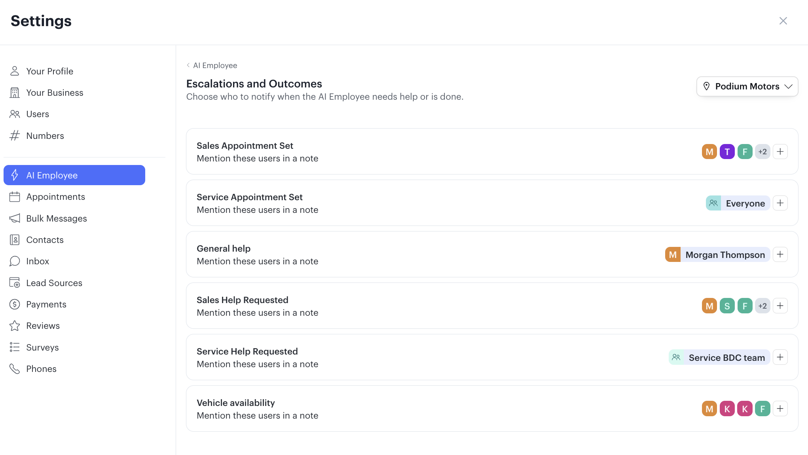
real uiOne row per escalation reason (Sales Appointment Set, General help, Service Help Requested...), each with avatar chips for exactly who gets mentioned when that case fires. Escalations on success too, not only failure: "task complete" pings the human for the next step. source
Podium · Preview
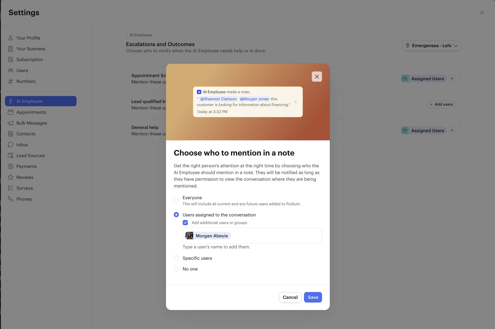
real uiThe routing modal previews a sample of the actual @mention note the AI will write ("@Shannon @Morgan this customer is looking for information about financing"). You see what an escalation will look like before saving the rule. source
Intercom · Workflow
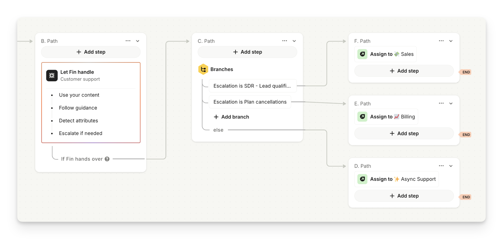
real uiThe "if Fin hands over" connector branches by escalation reason to a named owner (Assign to Sales / Billing / Async Support). Nothing lands in a generic pile when the AI gives up. source
Intercom · Rule
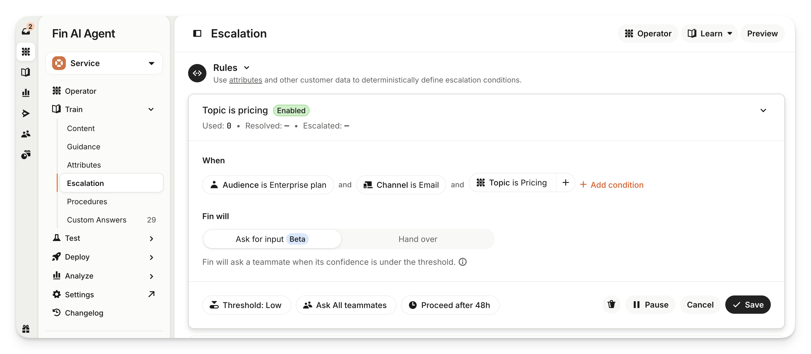
real uiBetween full autonomy and full handover: "Ask for input". Under a confidence threshold, Fin asks a named set of teammates first, with a proceed-after-48h timer. This is the draft-for-approval lane as a product control. source
In the command center: a routing table per escalation reason (product problem → Katie, brand complaint → Katie + Julia, task complete on a paid collab → Katie), each row previewing the flag card it will produce. The agent's escalation IS a note in the thread plus a row in the queue, exactly Podium's mechanic, so it works even before the dashboard exists.
9Clocks that chase you
Chatwoot · Front · Intercom · Podium
Katie's overnight and weekend anxiety is a deadline problem: which waiting creator breaches first. The field solves it with countdowns attached to the work itself, and pushes for what slipped anyway.
Chatwoot · SLA
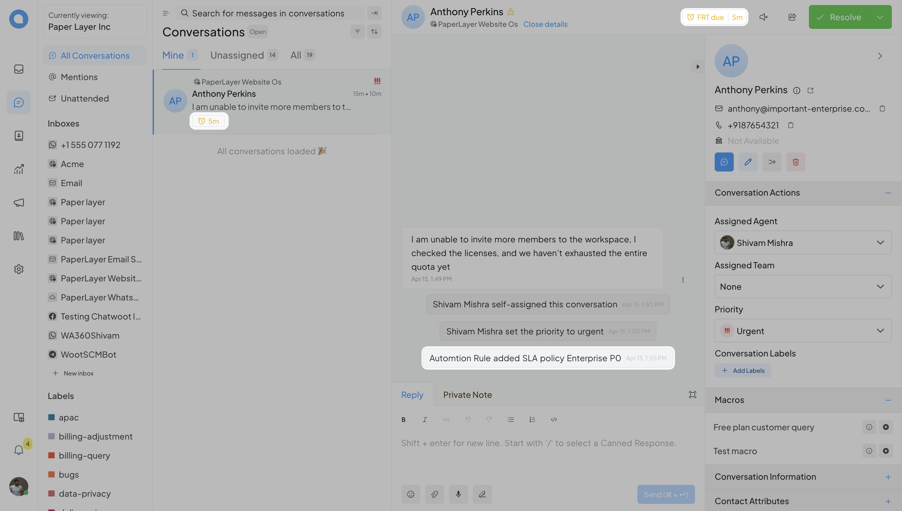
real uiThe same countdown chip ("FRT due | 5m") appears on the queue row and in the open-thread header, next to Resolve. One clock chases you from list to conversation until the reply is out. source
Front · Time goals
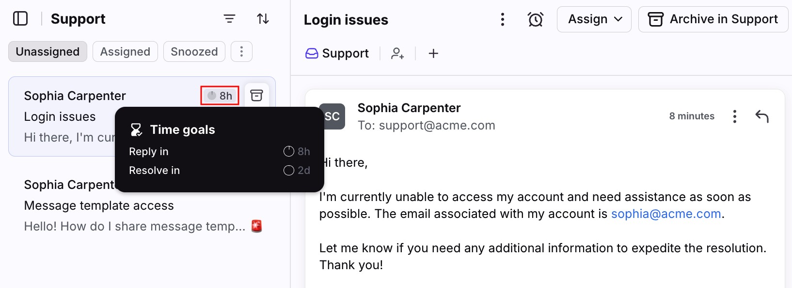
real uiA pie-timer badge with hours remaining on each row, hover tooltip splitting "Reply in 8h" vs "Resolve in 2d", and a breach marker on the row that slipped. Messages self-sort by urgency without being opened. source
Intercom · Sort
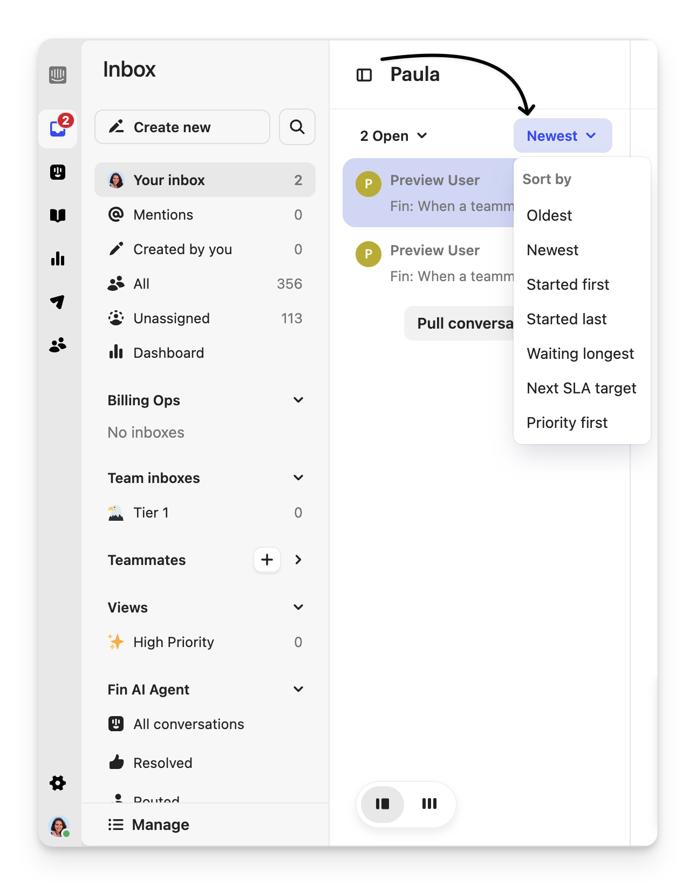
real uiThe queue sorts by "Next SLA target" and "Priority first", not just recency. The item about to break its promise floats to the top. source
Podium · Push
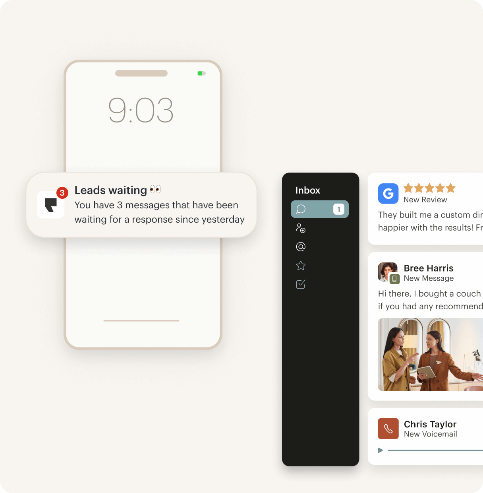
renderThe morning push: "Leads waiting: you have 3 messages that have been waiting for a response since yesterday." Slippage becomes a nudge on the phone, not a dashboard you have to remember. source
In the command center: every flag carries a reply-by clock (frustrated creator = short clock, routine draft = longer), the queue defaults to next-clock-first, and the 8am digest lists what breached overnight, which replaces scrolling every Slack channel back to Friday.
10The scoreboard
Intercom · Gladly · Gorgias · Zendesk
Nisarg on the call: "the biggest thing is gonna be abnormalities... detecting what's not normal is probably gonna be very important." The field's dashboards answer a calmer version of the same question: how much did the AI finish alone, where did it bail, and is it getting better.
Intercom · Performance
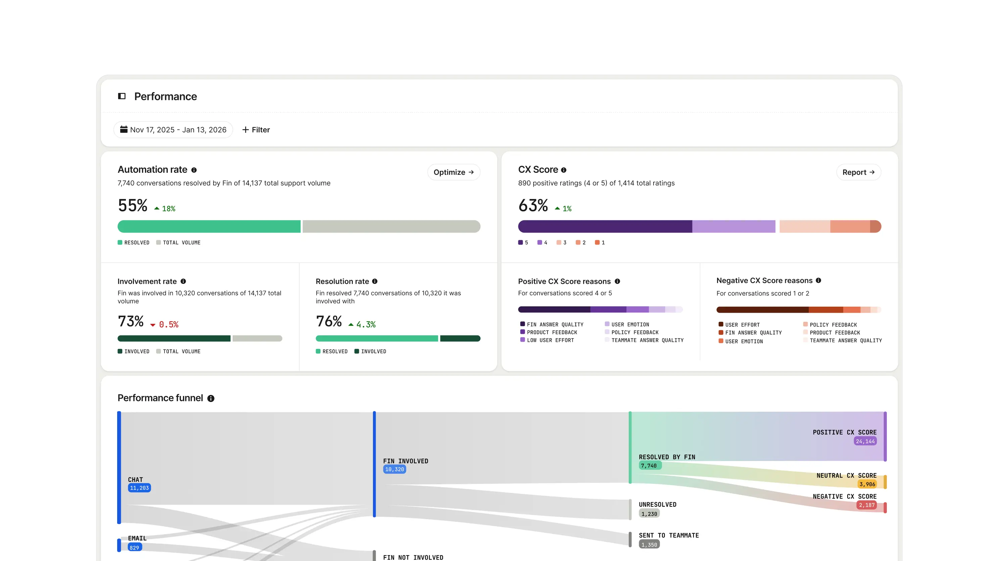
real uiThe headline is a funnel: conversations in, AI involved, split into resolved-by-AI vs sent-to-teammate, ending in satisfaction bands. The escalated slice always reads against total volume, never as a raw scary number. source
Gladly · Dashboard
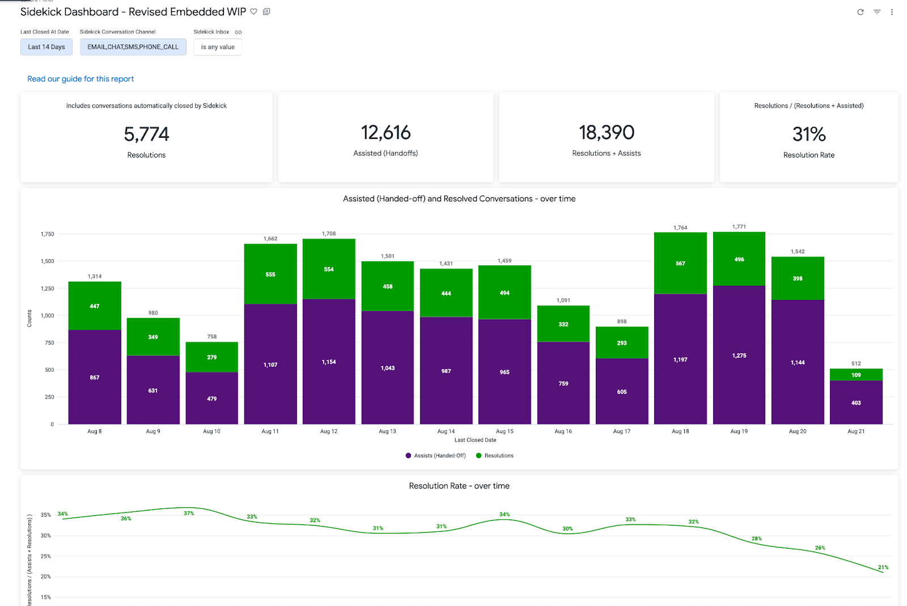
real uiPaired KPI tiles: what the AI finished alone vs what it handed over, with the resolution-rate formula printed on the tile ("Resolutions / (Resolutions + Assisted)") and a stacked daily bar. Honest math, visible. source
Gorgias · Statistics
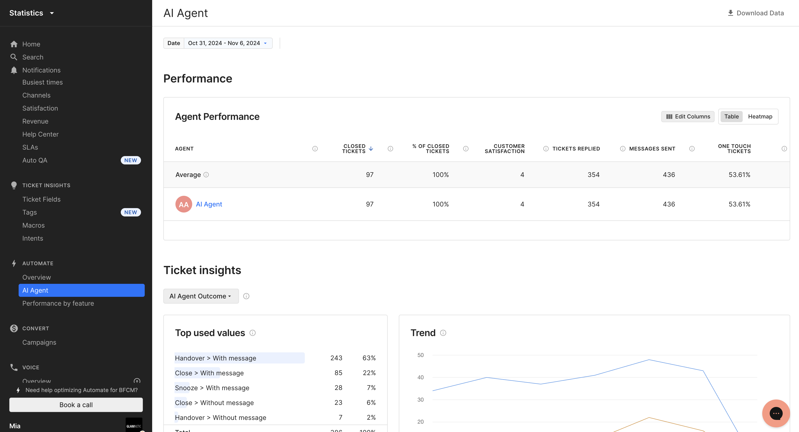
real uiThe AI's outcome mix as a first-class table: Handover with message 63%, Close with message 22%, Snooze 7%. Exactly how often and how the AI is bailing out, per period. source
Zendesk · Auto assist
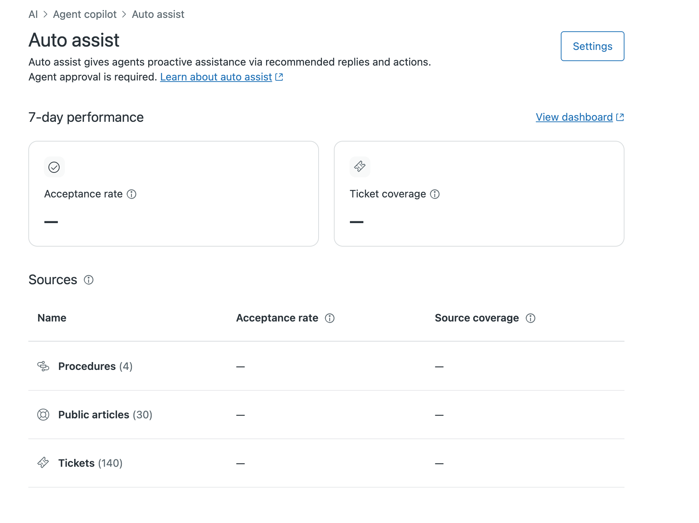
real uiAcceptance rate and coverage over 7 days, broken down by knowledge source (procedures, articles, tickets), each with its own acceptance rate. Which playbook content is pulling its weight, measured. source
Gladly · By reason
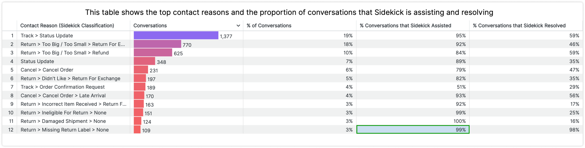
real uiPer contact reason: % assisted vs % resolved, with inline bars. This is the graduation table: which request types are safe to leave fully automated, decided row by row. source
In the command center: the scoreboard is the graduation dashboard from the kickoff brief: per-intent %-sent-unedited (the Superhuman metric), the outcome mix (sent / flagged / held), and an abnormality strip (send volume per brand per intent, STOP-rate, reply-rate) that would have caught the 28 Litsea dead-reminders bug in a day.
11Supervision that teaches
Gorgias · Gladly · Front · Kustomer
Katie's review minutes are training data if the UI catches them. The best systems put provenance and a one-tap verdict on every AI message, and turn a rejection into "here's what you should have used instead."
Gorgias · In thread
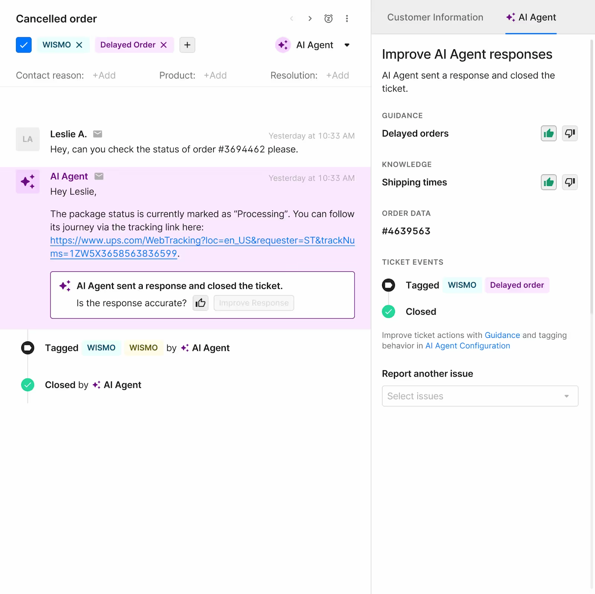
real uiUnder the AI's reply: "Is the response accurate?" with thumbs and an Improve Response button, and a rail showing exactly which GUIDANCE and KNOWLEDGE produced the reply, each votable. Provenance and verdict in the same glance. source
Gorgias · Feedback
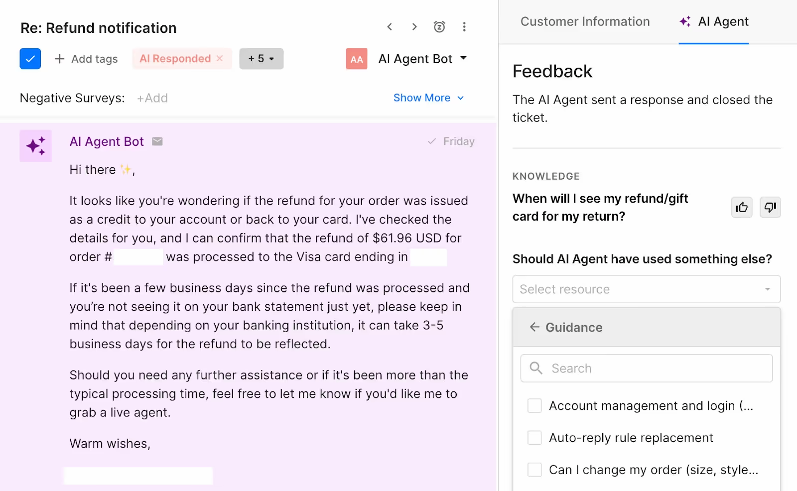
real uiThe rejection flow asks the productive question: "Should AI Agent have used something else?" with a searchable picker of playbooks. A correction becomes a routing fix, not just a complaint. source
Gladly · Review
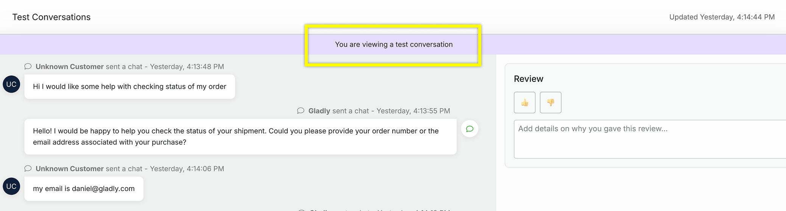
real uiEvery transcript carries thumbs up/down plus a "why" box. Supervision minutes become labeled training feedback without a separate QA tool. source
Front · AI reply
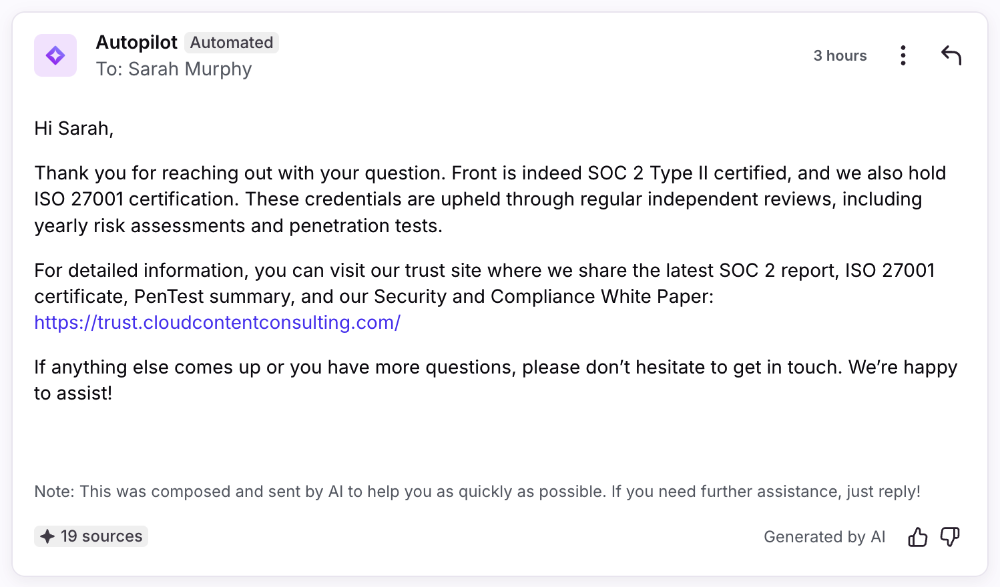
real uiEvery AI-sent message wears its receipts: an "Automated" author chip, a "19 sources" pill, a "Generated by AI" label, and thumbs. Any outbound reply is auditable in seconds. source
Kustomer · Evals
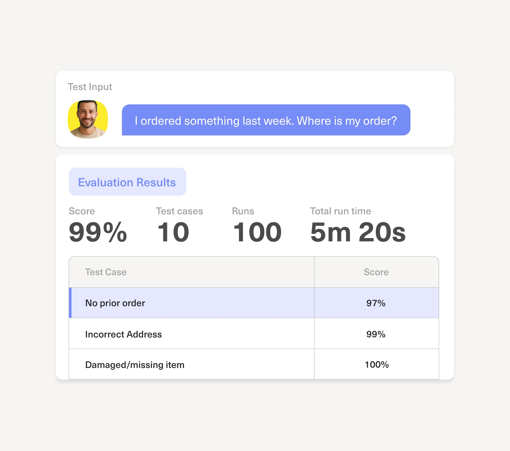
renderAutonomy earned scenario by scenario: named test cases ("No prior order 97%", "Damaged/missing item 100%") with per-scenario pass scores. Trust as a table, not a feeling. source
In the command center: every agent message shows which playbook and which facts produced it, Katie's edits are diffed and stored as new few-shot examples automatically, and rejections ask "which playbook should this have used?" That closes the loop the kickoff brief calls the maturity ladder, and it is how Katie stops babysitting.
RULES OF THE FIELD
What every good AI-supervision UI agrees on
Ownership is a visible state, never an inference. Banner, badge, read-only treatment, and a one-click Step in (Front, Zendesk, Chatwoot).
Escalations form their own queue and clean up after themselves. Podium's "AI Needs Help" filter with auto-clear is the reference.
A flag always carries its reason, its draft, and a one-line summary. Gladly's handoff trio is the fullest version; silence is never a state (Front's give-up event).
Review is two verbs and one key. Edit / Approve, Tab / Esc. Anything heavier stops being a ritual and becomes a chore.
Side effects are chips, not sentences. Zendesk shows actions separately from the reply so approval is informed.
The thread is the audit log. System lines for every assignment, rule and handoff, in sequence with the messages (Chatwoot, Kustomer, Missive).
Rules are plain sentences that wear their own stats and have a test box. Gladly + Intercom + Chatwoot converge on exactly the playbook-cards idea.
There is a middle mode between autonomy and handover. Intercom's "ask for input" under a confidence threshold is the draft lane, productized.
Clocks live on the work. Same countdown on the row and in the thread; sort by next breach; push the overnight misses at 8am.
The scoreboard is a funnel plus an outcome mix, with formulas printed on tiles and a per-reason graduation table (Intercom, Gladly, Gorgias).
Corrections must teach. Provenance on every message, thumbs plus why, and "what should it have used instead" (Gorgias).
Nobody shows campaign context. Every context rail here is commerce data bolted on. A rail with stage, deadline, shipment, payment and consent is the one thing no vendor can give Katie, and the strongest reason her command center is ours to build.
Where I would start. Prototype two screens first: the home queue (pattern 1: bucket tabs, ownership filter, state chips, clocks) and the flag card (patterns 2, 3, 5 in one component: reason line, one-line read-in, the draft as an SMS bubble, Approve / Edit, side-effect chips). Those two encode rules 1 through 6 and are enough for shadow mode to have a place to land. The scoreboard (pattern 10) only becomes real once shadow mode produces data, and the teaching loop (pattern 11) rides on the flag card anyway. Katie is building her own version this week; this page is the shared evidence base to compare both designs against.